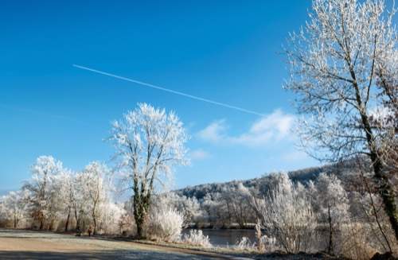
walk along the Naab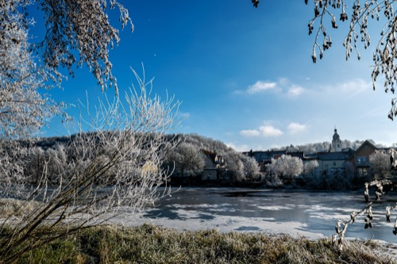
view over the Naab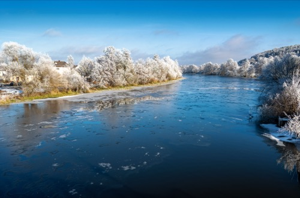
Naab river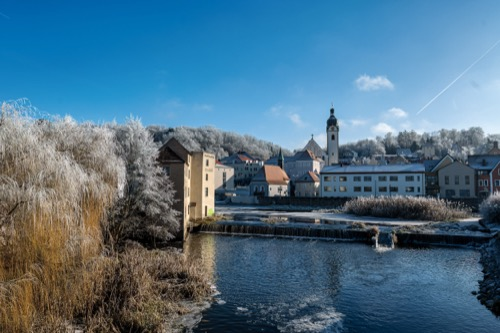
Schwandorf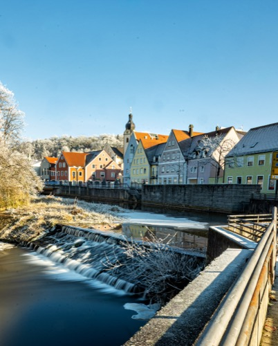
Schwandorf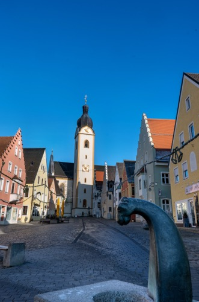
Upper Market Place, Schwandorf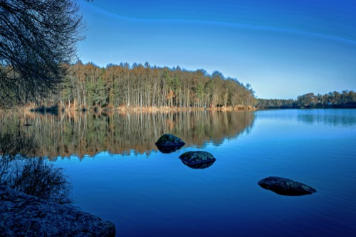
Bodenwöhrer Weiher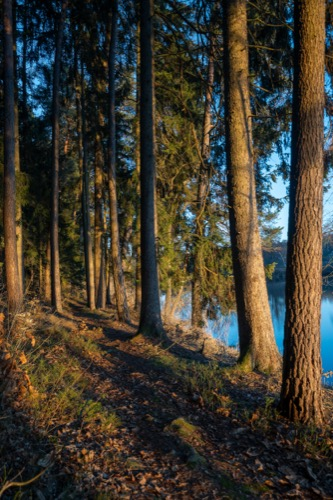
walk through the woods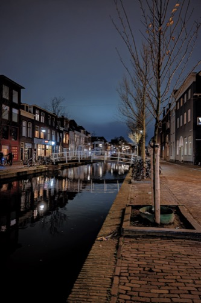
Delft by night (Koornmarkt)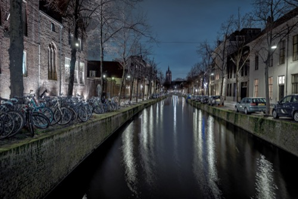
Delft by night (Oude Delft, Oude Kerk)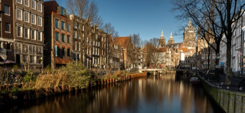
Amsterdam (Oudezijds Voorburgwal)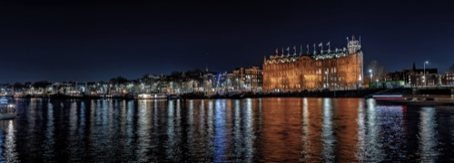
Amsterdam (Grand Hotel Amrâth)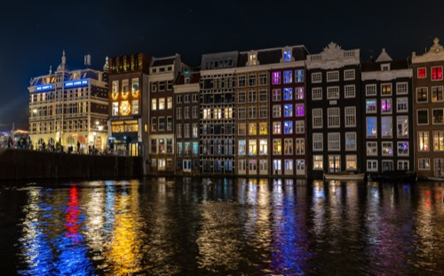
Amsterdam (Damrak)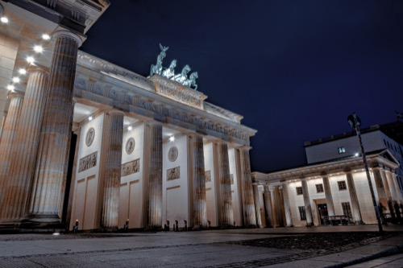
Berlin (Brandenburg Gate)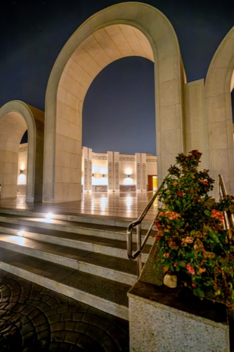
KAUST Mosque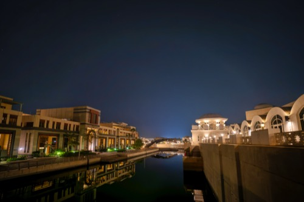
KAUST campus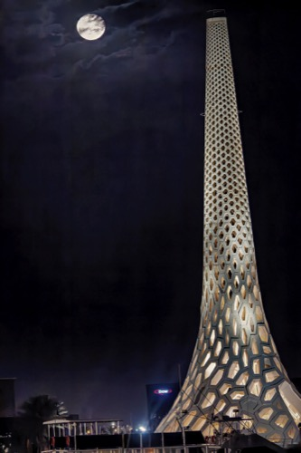
KAUST beacon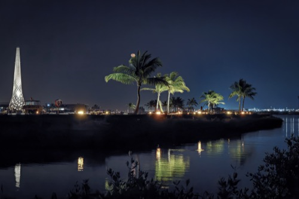
KAUST campus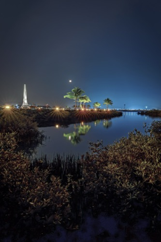
KAUST campus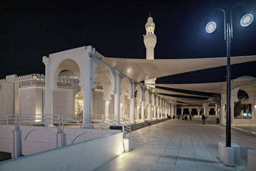
Jeddah (Al Rahma Mosque)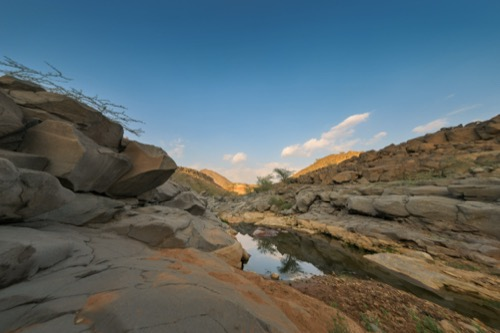
Wadi Zee (Widghan valley)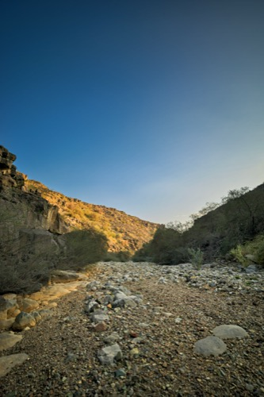
Wadi Zee (Widghan valley)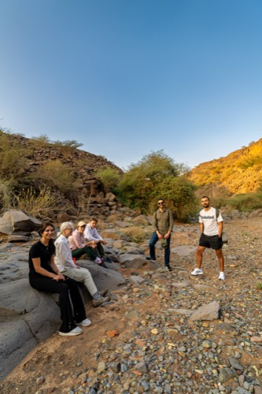
Wadi Zee (group photo)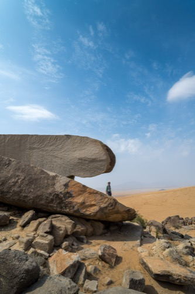
Potato rock (Mastoorah dunes)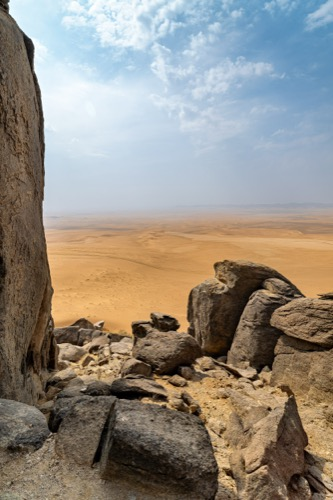
Potato rock (Mastoorah dunes)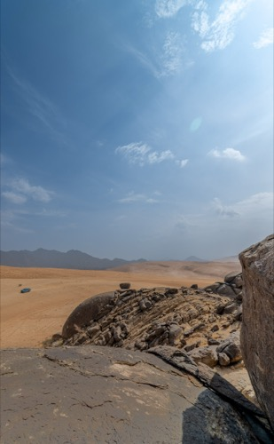
Potato rock (Mastoorah dunes)